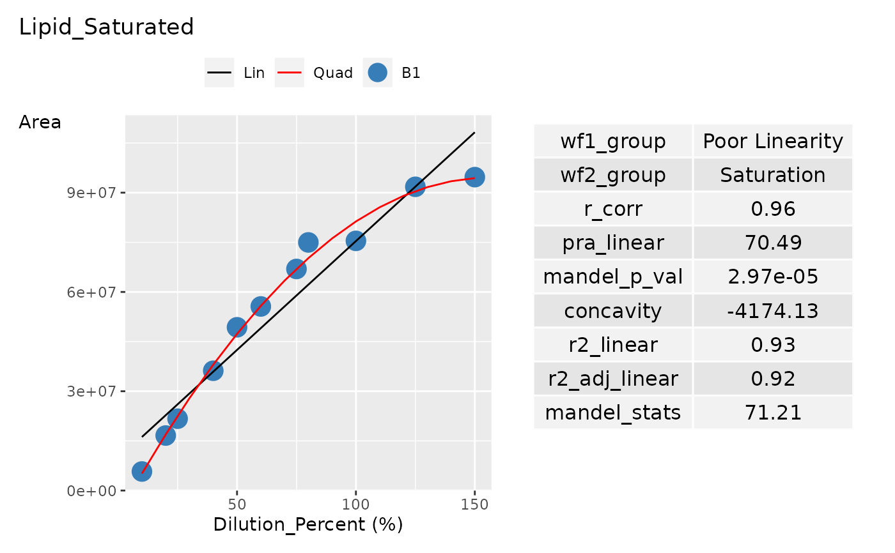

Plot curve using ggplot2.
Usage
plot_curve_ggplot(
curve_data,
curve_summary_grp,
title = "",
pal,
curv_batch_var = "Dilution_Batch_Name",
dilution_data = lifecycle::deprecated(),
dilution_summary_grp = lifecycle::deprecated(),
dil_batch_var = lifecycle::deprecated(),
conc_var = "Dilution_Percent",
conc_var_units = "%",
conc_var_interval = 50,
signal_var = "Area",
plot_first_half_lin_reg = FALSE,
plot_last_half_lin_reg = FALSE
)Arguments
- curve_data
A data frame or tibble containing curve data.
- curve_summary_grp
A data frame or tibble containing curve summary data for one group.
- title
Title to use for each curve plot. Default: ''
- pal
Input palette for each curve batch group in
curv_batch_var. It is a named char vector where each value is a colour and name is a curve batch group given incurv_batch_var.- curv_batch_var
Column name in
curve_tableto indicate the group name of each curve batch, used to colour the points in the curve plot. Default: 'Dilution_Batch_Name'- dilution_data
![[Deprecated]](figures/lifecycle-deprecated.svg)
dilution_datawas renamed tocurve_data.- dilution_summary_grp
-
dilution_summary_grpwas renamed tocurve_summary_grp. - dil_batch_var
-
dil_batch_varwas renamed tocurv_batch_var. - conc_var
Column name in
curve_tableto indicate concentration. Default: 'Dilution_Percent'- conc_var_units
Unit of measure for
conc_var. Default: '%'- conc_var_interval
Distance between two tick labels. in the curve plot. Default: 50
- signal_var
Column name in
curve_tableto indicate signal. Default: 'Area'- plot_first_half_lin_reg
Decide if we plot an extra regression line that best fits the first half of
conc_varcurve points. Default: FALSE- plot_last_half_lin_reg
Decide if we plot an extra regression line that best fits the last half of
conc_varcurve points. Default: FALSE
Examples
# Data Creation
dilution_percent <- c(
10, 20, 25, 40, 50, 60,
75, 80, 100, 125, 150
)
sample_name <- c(
"Sample_010a", "Sample_020a",
"Sample_025a", "Sample_040a", "Sample_050a",
"Sample_060a", "Sample_075a", "Sample_080a",
"Sample_100a", "Sample_125a", "Sample_150a"
)
dilution_batch_name <- c(
"B1", "B1", "B1", "B1", "B1",
"B1", "B1", "B1", "B1", "B1", "B1"
)
transition_name <- c(
"Lipid1", "Lipid1", "Lipid1", "Lipid1",
"Lipid1", "Lipid1", "Lipid1", "Lipid1",
"Lipid1", "Lipid1", "Lipid1"
)
lipid1_area_saturated <- c(
5748124, 16616414, 21702718, 36191617,
49324541, 55618266, 66947588, 74964771,
75438063, 91770737, 94692060
)
curve_data <- tibble::tibble(
Sample_Name = sample_name,
Dilution_Batch_Name = dilution_batch_name,
Dilution_Percent = dilution_percent,
Transition_Name = transition_name,
Area = lipid1_area_saturated,
)
grouping_variable <- c("Transition_Name", "Dilution_Batch_Name")
# Get the dilution batch name from dilution_table
dilution_batch_name <- dilution_batch_name %>%
unique() %>%
as.character()
curv_batch_col <- c("#377eb8")
# Create palette for each curve batch for plotting
pal <- curv_batch_col %>%
stats::setNames(dilution_batch_name)
# Create curve statistical summary
curve_summary_grp <- curve_data %>%
summarise_curve_table(
grouping_variable = grouping_variable,
conc_var = "Dilution_Percent",
signal_var = "Area"
) %>%
evaluate_linearity(grouping_variable = grouping_variable) %>%
dplyr::select(-c(dplyr::all_of(grouping_variable)))
# Create the ggplot
p <- plot_curve_ggplot(
curve_data,
curve_summary_grp = curve_summary_grp,
pal = pal,
title = "Lipid_Saturated",
curv_batch_var = "Dilution_Batch_Name",
conc_var = "Dilution_Percent",
conc_var_units = "%",
conc_var_interval = 50,
signal_var = "Area"
)
p
